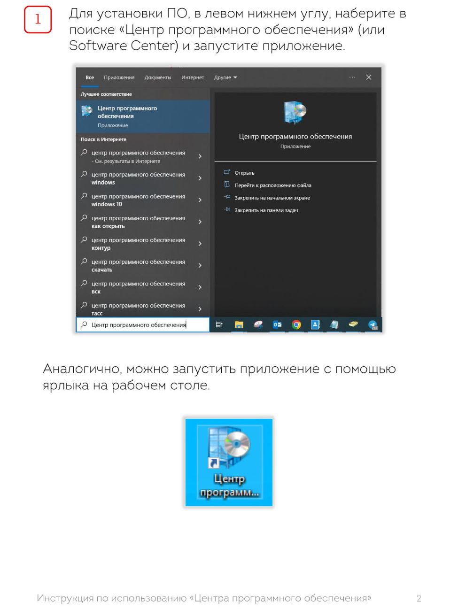
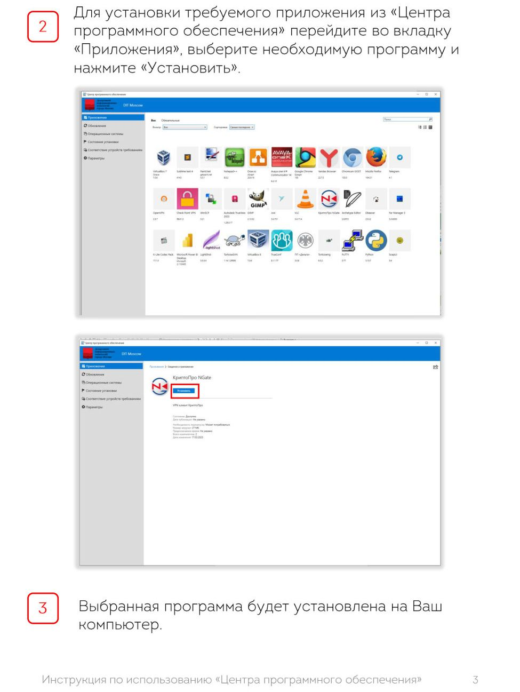

Как установить программу
Откройте «Центр программного обеспечения» ярлыком с рабочего стола. В поиске введите название программы, откройте карточку и нажмите «Установить». Установка идёт сама, права администратора не нужны. Ниже — страницы инструкции ДИТ со скриншотами.

